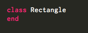
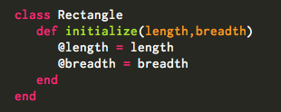
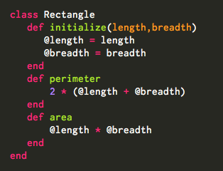
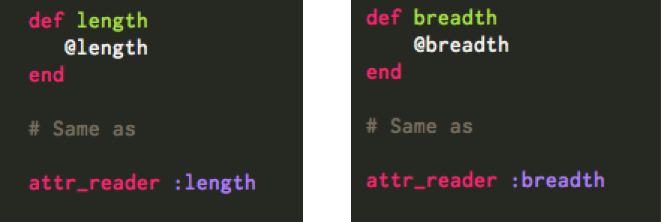
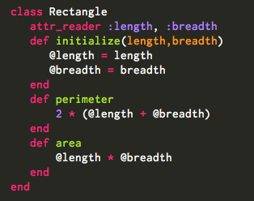
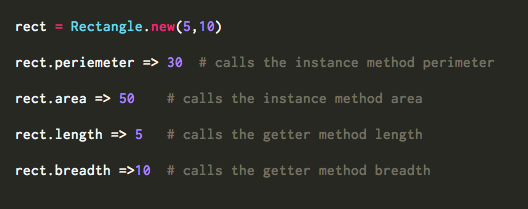

In Ruby, classes basically act as the factories to build objects. An object instantiated from a certain class is called ‘an instance of that class’. Calling the method new on the class creates a new instance of the class. A class has two features:
1. State
State is data that is persisted over multiple calls to the thing. If it "remembers" anything between one execution and the next, then it has state. A class must have some kind of state that defines the attributes of its instances. In the case of a simple rectangle, this could be its length and breadth.
1. Behavior
Behavior is the code that manipulates or processes the state-data, or non-state data that is used only during a single execution of the code, (like parameter values passed to a function). Methods, subroutines or a function, anything that changes or does something is behavior.
Classes in Ruby have names beginning with a capital letter. A class is defined as shown below. This creates a class of type Rectangle.

Next we use the initialize method inside the class. This method is executed every time a new instance of class is created. Lets create an
initialize method inside the class and give it the parameters of length and breadth.

@ sign before a variable is used to signify that it is an instance variable. An instance variable is always bound to the specific instance of the class and cannot be used by other instances of the same class. This means every instance of the class Rectangle will have its own unique copy of these variables and is in effect, a distinct rectangle. The scope of instance variables is within the class and any method defined inside the class but cannot be accessed outside the class. To access the value of the instance variable outside the class, you need to define methods inside the class that set/modify/output the value of instance variables. @length and @breadth are the instance variables defined inside the classs.
Now we define a behavior as methods on the class Rectangle. So lets define two instance methods [perimeter] and [area] that calculates the perimeter and area of the rectangle. The instance methods can be accessed outside the class by all instances of a particular class.

Next we define two getter methods called [length] and [breadth] that return the value of the instance variables @length and @breadth. The getter methods have a corresponding shorthand method called attr_reader to achieve the same task.

Using the shorthand notation of the length and breadth method in the Rectangle class,

Next we create an instance of the class Rectangle and call the instance methods periemeter, area and the getter methods length and breadth.

This will print the respective values returned from the method. We can now create new instances of the class and assign independant length and breadth values as parameters.